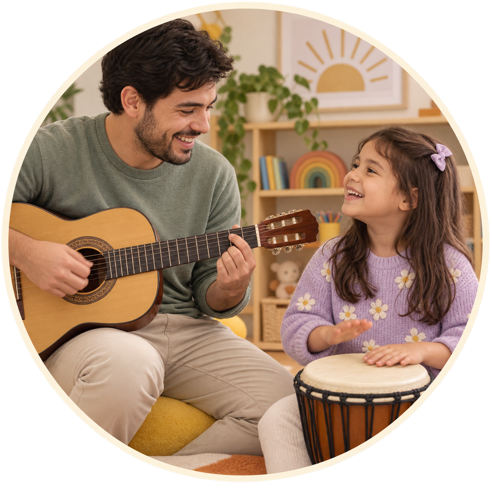
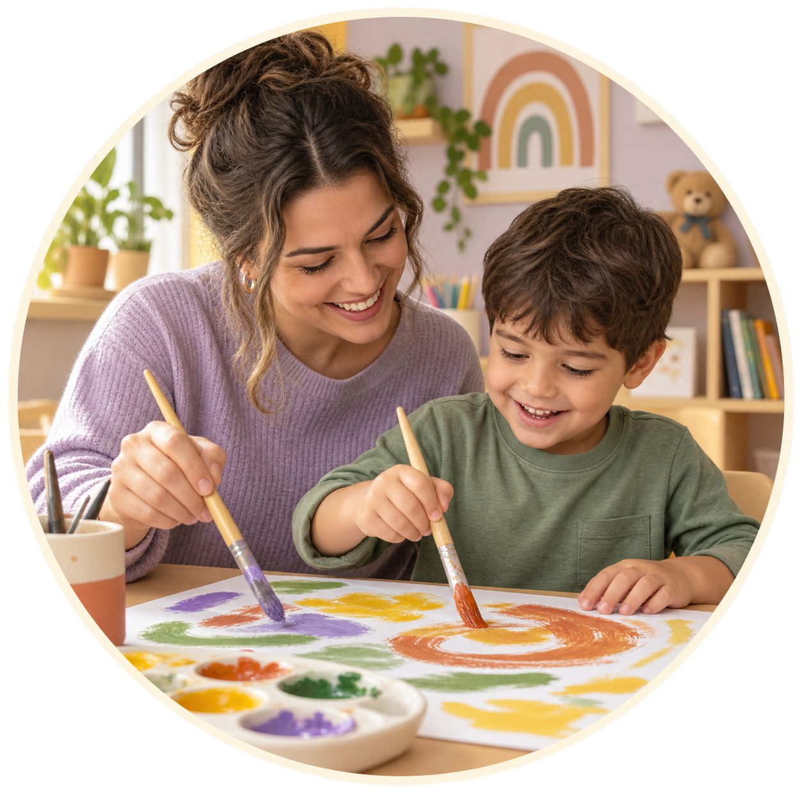
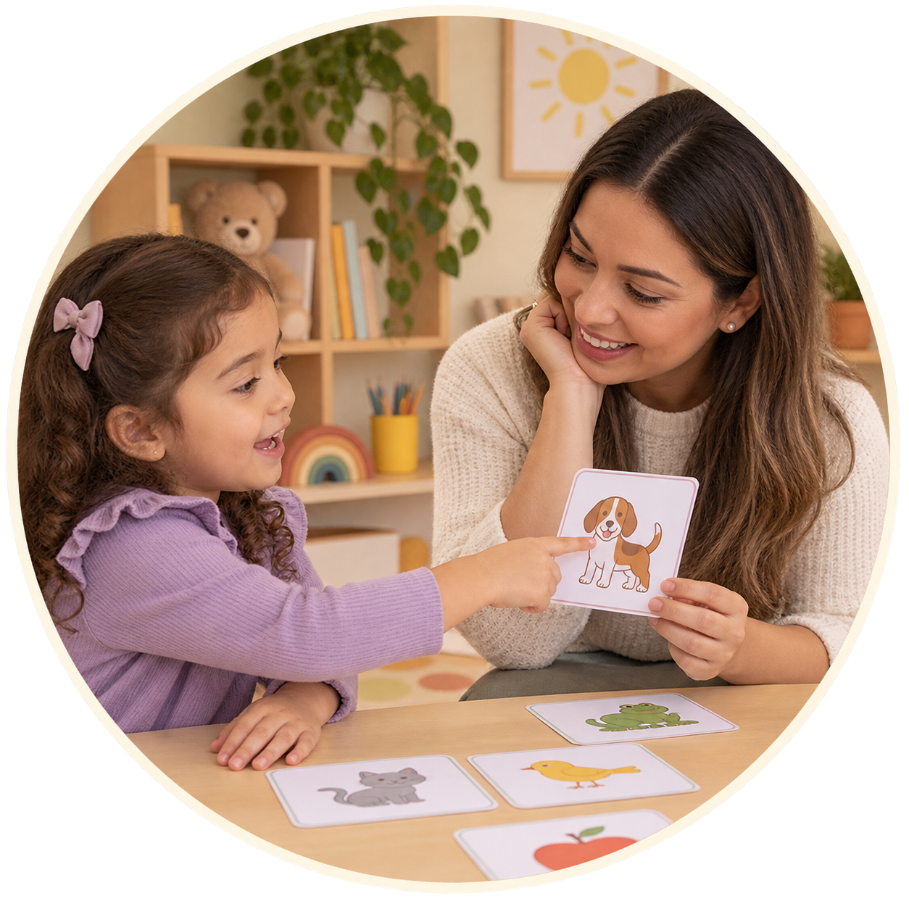
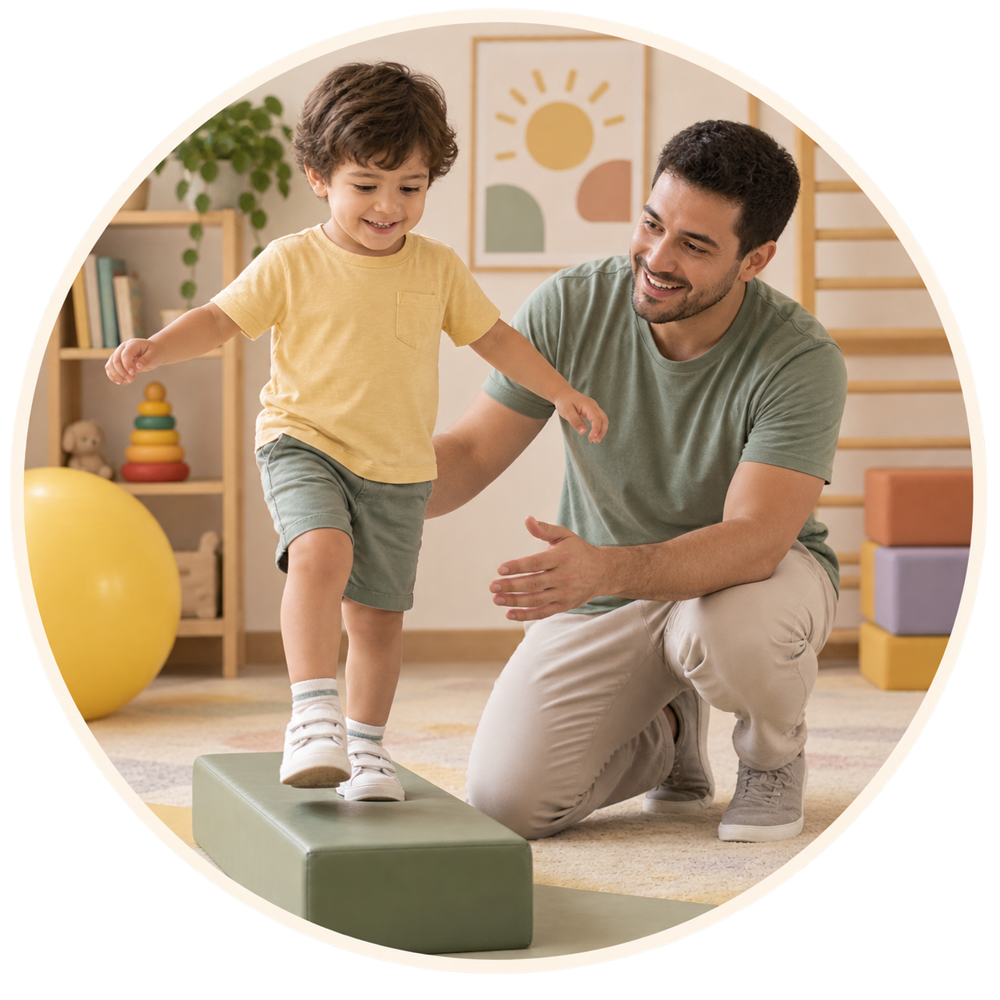
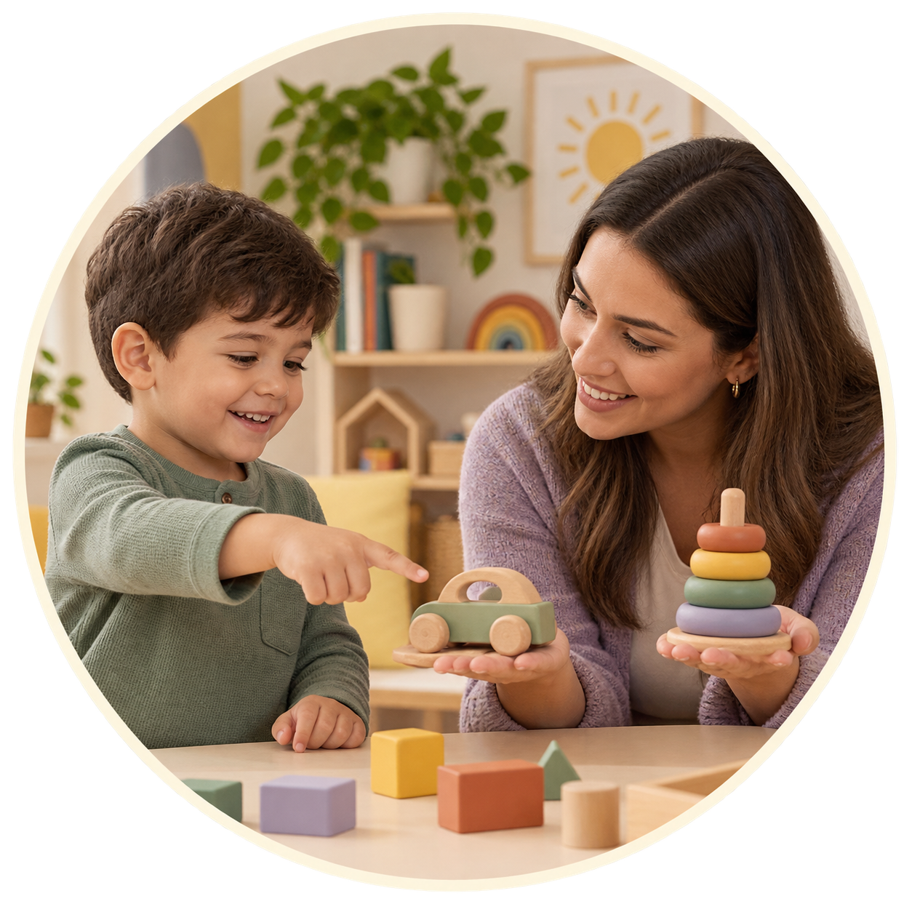
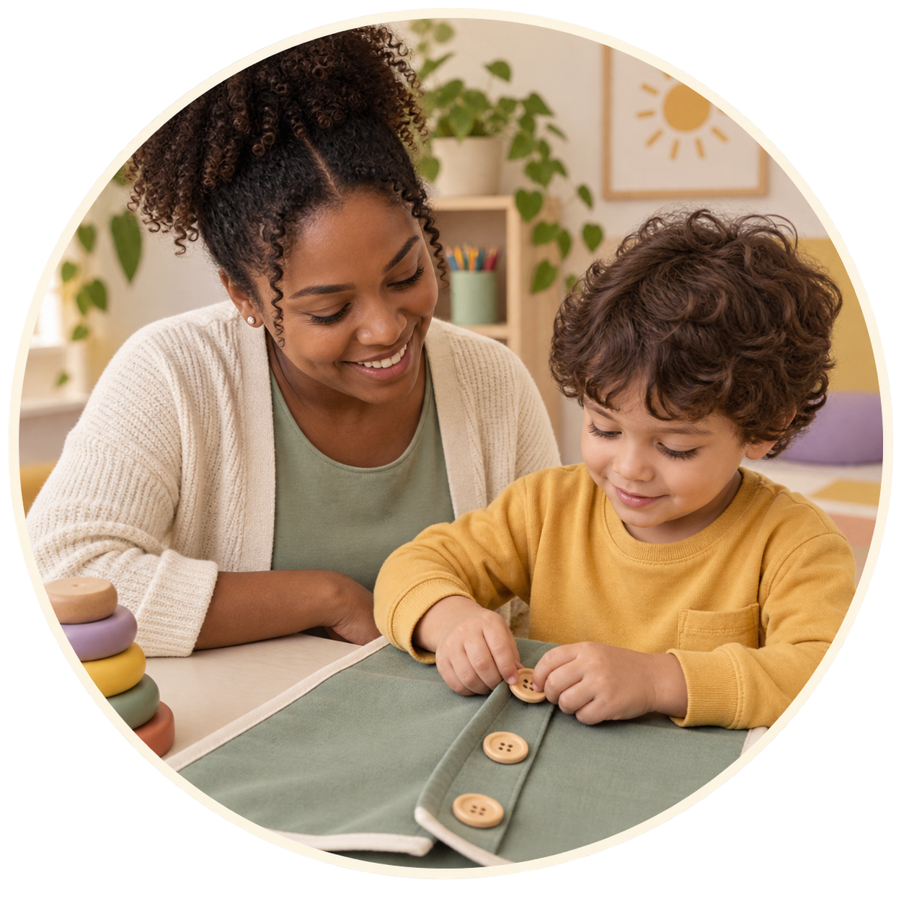
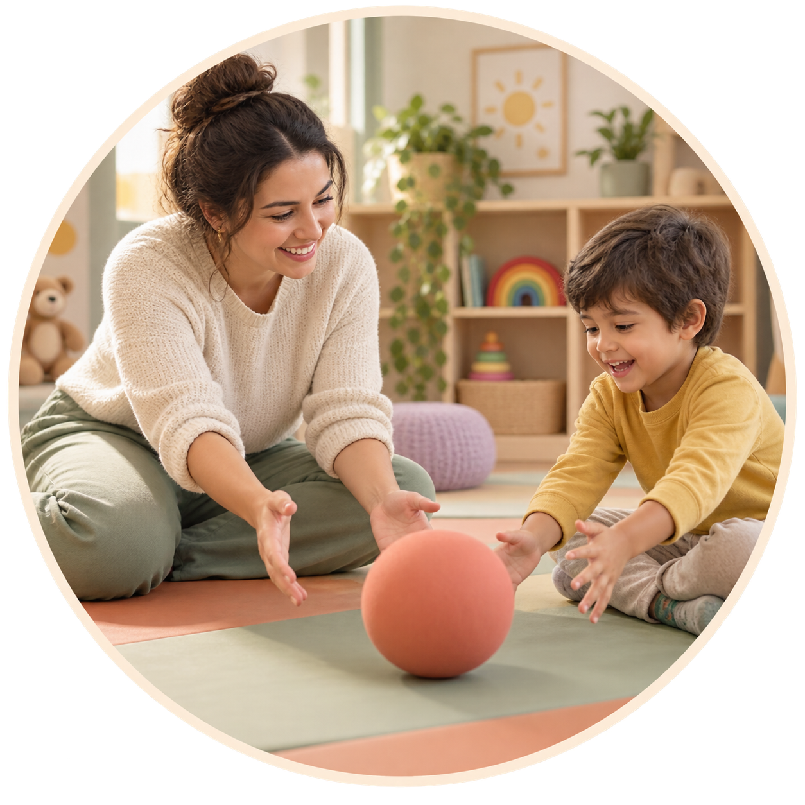
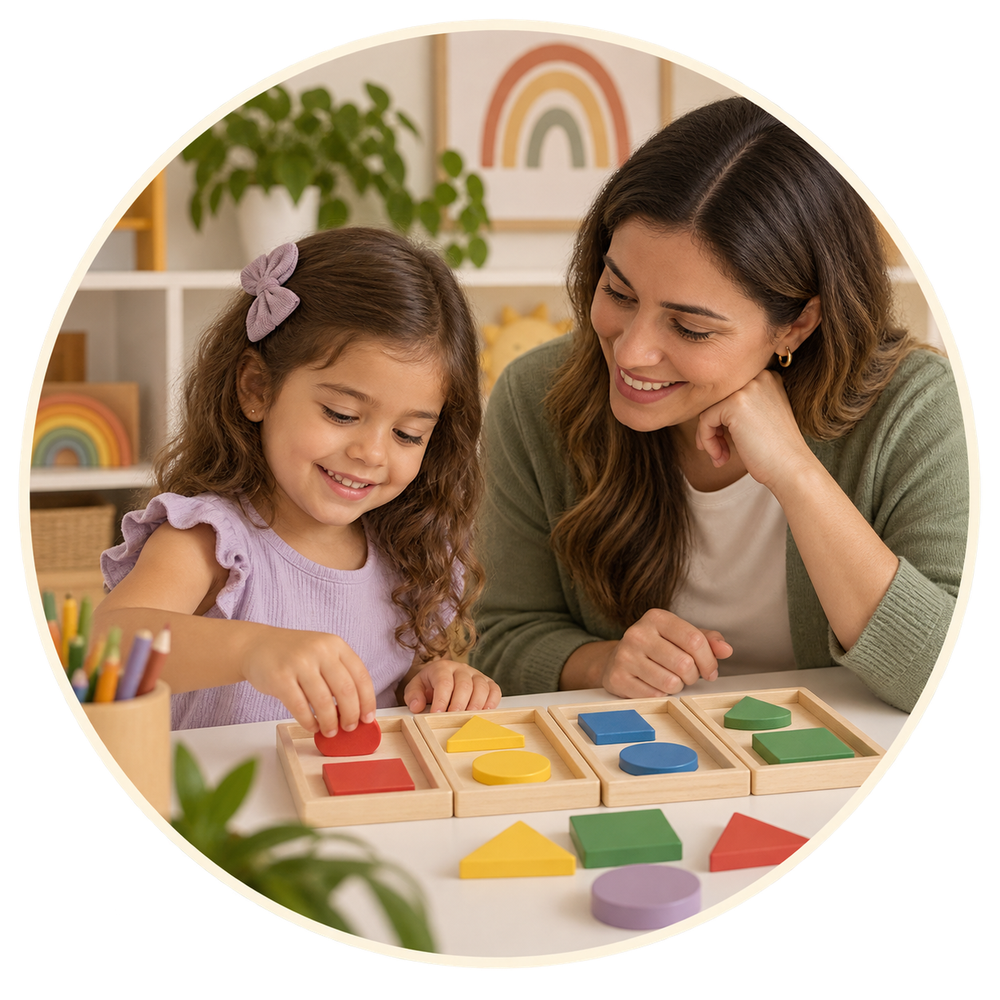

Terapia ABA
Comunicação, participação e autonomia no dia a dia.
Profissionais de diferentes áreas compartilham conhecimentos para apoiar cada criança e sua família.

Comunicação, participação e autonomia no dia a dia.

Escuta e apoio às diferentes maneiras de se expressar.

Movimento, equilíbrio e coordenação com confiança.

Mais participação nas atividades do cotidiano.

Corpo, espaço e descobertas significativas.

Apoio aos processos e formas de aprender.

Ritmo, escuta e expressão compartilhada.

Cores, formas e materiais para novas expressões.